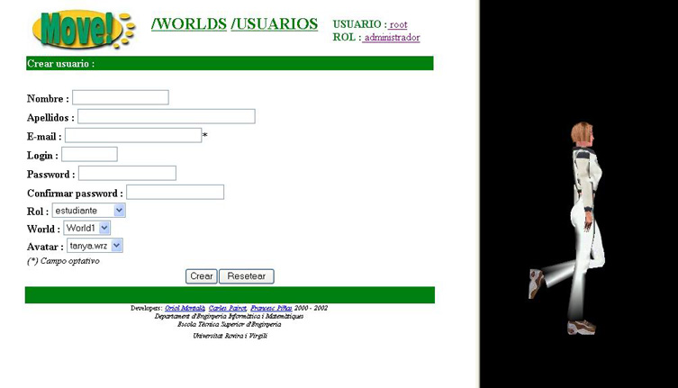

4.3 Registrar un nuevo usuario
Cuando elegimos la opci�n de registrar un nuevo usuario nos aparece la siguiente pantalla:

Igual como pasaba con la pantalla de modificaci�n de los datos de un usuario existente, aqui tambien tenemos la pantalla dividida en 2 partes:
- La parte que corresponde al formulario que deberemos rellenar para crear el nuevo usuario.
- La parte de pre-visualizaci�n del aspecto que tendr� el usuario en el entorno 3D del MOVE!, y que se corresponde con el valor actual del campo Avatar.
Todos los campos que aparecen en el formulario son obligatorios, excepto el que corresponde al E-mail, el qual es optativo.
El significado de cada campo ya ha sido descrito anteriormente dentro de este cap�tulo.
Una vez finalizada la introducci�n de datos, tendremos que pulsar el bot�n  e immediatamente el nuevo usuario pasar� a formar parte
de la lista de usuarios registrados en MOVE!.
e immediatamente el nuevo usuario pasar� a formar parte
de la lista de usuarios registrados en MOVE!.